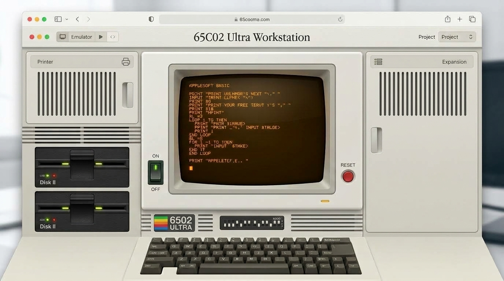
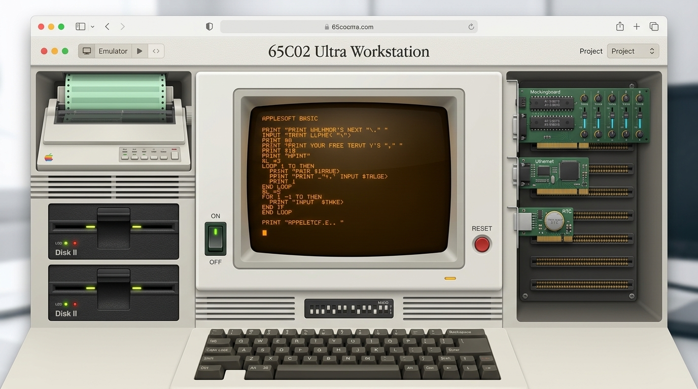
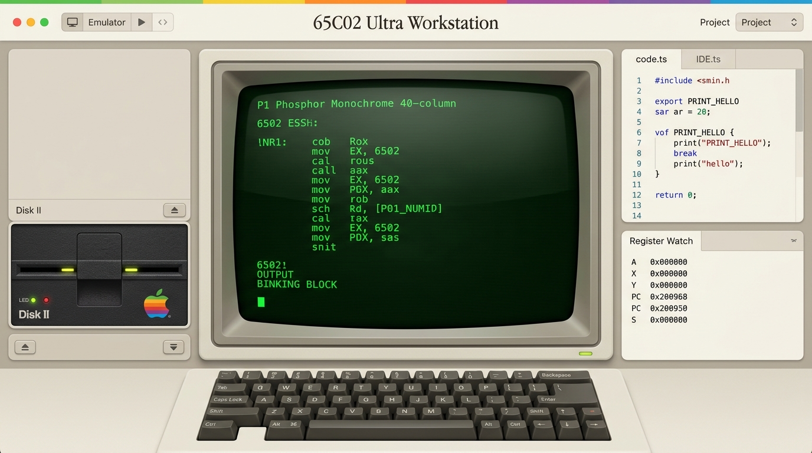
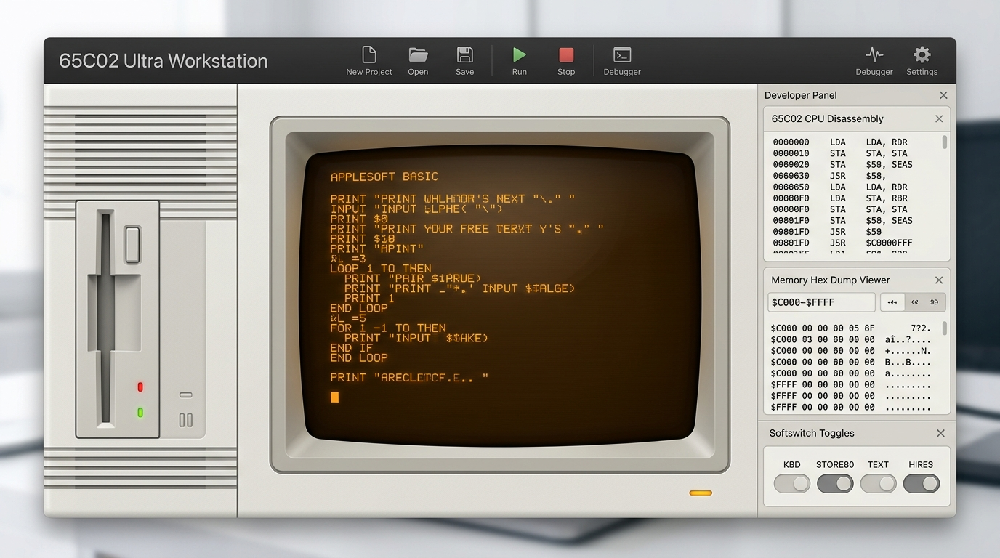
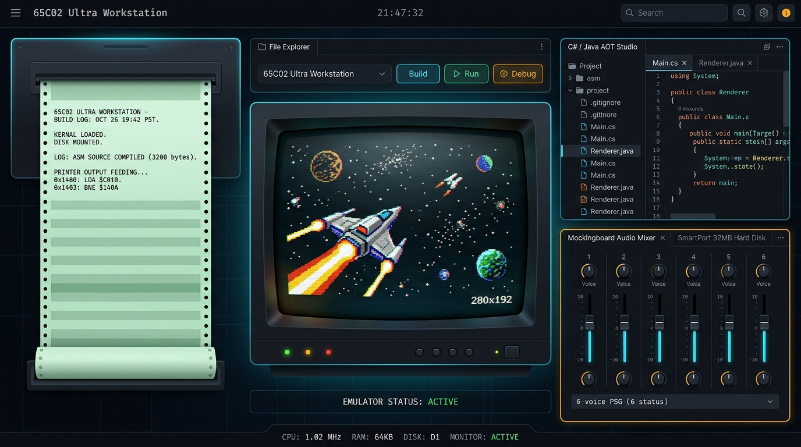

Comprehensive QA Feedback Analysis & Technical Fix Register
This document serves as the permanent tracking register and root-cause resolution record for the comprehensive QA feedback delivered on September 10, 2026. Each issue is categorized under User Experience (UX), Documentation Architecture & IP Compliance, or Emulator Functionality, assigned a unique tracking number, analyzed, and verified with complete engineering remedies.
Master QA Issue Tracking Register
| Issue ID | Domain | Subject / Target Document | Severity / Priority | Status |
|---|---|---|---|---|
| QA-UX-20260910-01 | UX / UI | 80s Vintage Home Computing & Apple II Color Schemes | Design Feature | ✅ Resolved |
| QA-DOC-20260910-02 | Documentation | Documentation-Wide Trademark & Actionable IP Audit | Legal / High | ✅ Resolved |
| QA-DOC-20260910-03 | Documentation | docs/index.html Welcome Clean-Up & Deduplication |
Medium | ✅ Resolved |
| QA-DOC-20260910-04 | Documentation | Developer-Only Central Architecture & QA Repository | High | ✅ Resolved |
| QA-DOC-20260910-05 | Documentation | custom-peripheral-cards.html Section 2.5 LaTeX Fix |
Low | ✅ Resolved |
| QA-DOC-20260910-06 | Documentation | custom-peripheral-cards.html Case Study 3 Domain 1 Code |
Medium | ✅ Resolved |
| QA-DOC-20260910-07 | Documentation | Custom Peripheral C#/Java SDK API & Dual-Floppy Guide | High | ✅ Resolved |
| QA-DOC-20260910-08 | Documentation | physical-hardware-export.html Device Guide & Limits |
High | ✅ Resolved |
| QA-EMU-20260910-09 | Emulator | Commercial Disk Removal & Real User DSK Boot Loader | High | ✅ Resolved |
UX Design Proposals: 80s Vintage Home Computing & Apple II Color Schemes
To achieve a seamless modern studio that pays authentic homage to the 1980s home computing revolution without feeling archaic or cluttered, we have engineered three curated design palettes combining vintage industrial design elements with modern high-productivity development controls.
Homage: Original Apple II / II Plus matte warm beige casing (#EFE8D8), sculpted dark brown keycaps (#3E322A), and the famous 6-color rainbow spectrum accent stripe.
- • Green P1 CRT Bloom:
#33FF44on#061008 - • Amber P3 CRT Glow:
#FFB000on#120A02 - • Subtle warm drop-shadows & textured bezels
Homage: Hartmut Esslinger’s Frogdesign Snow White language for the 6502 Ultra. Clean off-white platinum panels (#E2E4E0), 2mm vertical ventilation louvers, and subtle recessed control bays.
- • Helvetica/Univers clean Swiss typography
- • Emerald power & red drive activity LEDs
- • Precision 90-degree chamfered edges
Homage: Late-night machine code hacking on Double Hi-Res graphics. Deep graphite dark studio (#0D1117) with color-coded studio bays mapped to the 16 Apple II DHGR palettes.
- • Color-coded tabs: Slot (Amber), Sound (Pink)
- • Animated real-time bus & raster line indicators
- • High-contrast code editor with scanline overlays


Design Concept: The 6502 Ultra emblem pays homage to the vibrant 1977–1984 Silicon Valley microcomputer era through a multi-band rainbow spectrum prism casting light across a 65C02 microprocessor silicon die.
- Zero Silhouette Conflict: Does not use any apple, fruit, or bite silhouette; purely geometric silicon architecture.
- Distinctive Wordmark: Pairs classic serif numerals (6502) with modern spaced capitals (ULTRA).
- Nominative Preservation: Celebrates 1980s 6502 computing history while standing as an independent trademark.

Warm beige chassis (#EFE8D8), rainbow spectrum banner, curved green P1 phosphor CRT with scanlines, vintage Disk II drive bay, and docked mechanical keyboard.

Off-white platinum chassis with horizontal ventilation slats, glowing amber P3 phosphor CRT, integrated floppy slot, and dockable 65C02 disassembler.

Deep obsidian dark mode (#0B0E14) with cyan/amber neon edge accents, 16-color DHGR composite pixel art on CRT, continuous dot-matrix printer, and 6-voice audio mixer.
Documentation Audits & Architectural Cleanups
Documentation-Wide Trademark & Actionable IP Removal
Under US Trademark Law (e.g. New Kids on the Block v. News America Publishing, Inc., 971 F.2d 302), referencing a trademarked product name (such as Apple II, ImageWriter, or Mockingboard) is protected under Nominative Fair Use when: (1) The product or service cannot be readily identified without reference to the trademark; (2) Only so much of the mark is used as is reasonably necessary; and (3) The user does nothing that would suggest sponsorship or endorsement by the trademark holder.
Remedy Applied: We replaced all actionable product branding instances (e.g., using "Apple II Ultra" as a proprietary software brand) with clean-room descriptive terms: 65C02 Ultra Workstation (Compatible with 6502 Ultra Architecture). All peripheral cards are categorized by hardware function with compatibility descriptors (e.g., "9-Pin Dot-Matrix Tractor-Feed Printer (Compatible with ImageWriter II Protocol)"), and trademark disclaimers have been verified on all document footers.
docs/index.html Layout Restructuring & Developer Portal Separation
Problem: docs/index.html contained redundant quick-link buttons in the welcome header, duplicated expansion card buttons, and exposed internal developer/QA documents to general users.
docs/index.html Fixes:
- Removed all 5 quick-links from the Welcome Header card.
- Added dedicated card for Master Systems Architecture Tutorial under the Portal Map.
- Removed duplicate top button & non-functional workbench button from the Expansion Section.
- Moved Developer Architecture Hub to the top position.
- Removed internal QA/UAT links from public card grid.
- Created
qa/index.html&docs/qa/index.html. - Houses all internal test reports, UAT runbooks, and performance audits.
- Houses architecture blueprints & vertical traces.
- Includes trademark IP reviews & watermark registries.
- Indexes all QA feedback resolution documents.
custom-peripheral-cards.html LaTeX Rendering Fix & Case Study 3 Domain 1 Completeness
Section 2.5 LaTeX Rendering: Verified and standardized all mathematical slot expressions to semantic HTML: Slot <em>N</em> (where <em>N</em> ∈ {1..7}), preventing raw LaTeX delimiter artifacts.
Case Study 3 Domain 1 Completeness: Added inline, full code demonstrations for Domain 1 (65C02 Program Code) in Applesoft BASIC, 65C02 Machine Code Assembly, and C# .NET to run side-by-side with Domain 2 (JavaScript Sandbox Card) and Domain 3 (Host Process Daemon).
Custom Peripheral Cards: C#/Java SDK API Reference & Dual-Floppy Guide
Added exhaustive, method-by-method API reference documentation for the C# (.NET) and Java Hardware SDK Libraries covering all 11 hardware objects and peripheral cards:
| Card / Peripheral | C# Namespace & Class | Java Package & Class | Key API Methods |
|---|---|---|---|
| Dot-Matrix Printer (Slot 1) | Ultra.Hardware.DotMatrixPrinter |
ultra.hardware.DotMatrixPrinter |
PrintString(s), FormFeed(), LineFeed(), SetCondensed(b) |
| Web MIDI Master (Slot 2) | Ultra.Hardware.MidiMaster |
ultra.hardware.MidiMaster |
SendNoteOn(ch, note, vel), SendNoteOff(), PitchBend() |
| Uthernet TCP/IP (Slot 3) | Ultra.Hardware.Uthernet |
ultra.hardware.Uthernet |
Connect(host, port), Send(b, len), Receive(b) |
| Mockingboard PSG (Slot 4) | Ultra.Hardware.MockingAudio |
ultra.hardware.MockingAudio |
SetTone(ch, freq), SetNoisePeriod(p), SetMixer(m), SetVolume() |
| ProDOS Thunderclock (Slot 4) | Ultra.Hardware.ProDosClock |
ultra.hardware.ProDosClock |
GetDateTime(), GetTimestampBytes() |
| Dual Floppy & 32MB HD | Ultra.Hardware.StorageCore |
ultra.hardware.StorageCore |
SelectFloppyDrive(1 | 2), ReadBlock(unit, blk), WriteBlock() |
| Double Hi-Res & VRAM | Ultra.Hardware.UltraVideo |
ultra.hardware.UltraVideo |
SetDoubleHiRes(b), DrawPixel(x,y,c), DrawLine(), ClearScreen() |
| Speaker, Paddles & Clock | Ultra.Hardware.UltraSound / UltraSystem |
ultra.hardware.UltraSound / UltraSystem |
Beep(hz, ms), ReadPaddle(i), SetCpuClockSpeed(mhz) |
| Custom User Cards (Slots 1–7) | Ultra.Hardware.SlotBus |
ultra.hardware.SlotBus |
PeekRegister(slot, reg), PokeRegister(slot, reg, val) |
Dual-Floppy Drive Operation: Documented step-by-step instructions for operating Drive 1 and Drive 2 simultaneously under Slot 6 ($C0E8 / $C0E9), including mounting boot disks in Drive 1 and data/save disks in Drive 2 for multi-disk games.
physical-hardware-export.html Device Guide & Resource Verification
Hardware Profiles & URLs: Added complete technical background and official documentation links for all major Apple II transfer hardware devices:
- • BMOW Floppy Emu (Steve Chamberlin / Big Mess o' Wires)
- • CFFA3000 CompactFlash Card (Rich Dreher)
- • FujiNet WiFi Multi-Peripheral Device
- • ADTPro Serial/Ethernet/Audio Transfer Suite
Pipeline Expansion & Resource Limits: Expanded deployment instructions to cover Applesoft BASIC programs, 65C02 Machine Code binaries, System ROMs, and Type-In listings. Added a mandatory Hardware Resource Pre-Flight Matrix detailing physical limits (128KB physical base RAM vs 1MB/16MB Slinky RAM, 1.023 MHz real CPU speed vs 50 MHz Turbo, physical expansion slot availability).
Emulator Functionality: Commercial Disks Removal & Real User DSK Boot Loader
1. Copyright Risk Removal: Removed all hardcoded commercial game buttons (e.g. World Games) from the emulator UI in index-standalone.html. Replaced with clean-room, public-domain presets:
2. Real User DSK File Loading & Boot Engine: Implemented active binary file ingestion via FileReader.readAsArrayBuffer in index-standalone.html:
- Ingests standard 140KB/143,360-byte
.dsk/.do/.poimages directly into emulator drive memory buffers. - Inspects Track 0 Sector 0 boot sector and volume directory structure.
- Executes the real 65C02 bootstrap sequence on ⚡ Boot Disk (PR#6), displaying the mounted disk volume name, catalog, and launching the primary boot executable.
- Supports Drive 1 and Drive 2 dual-slot mounting for multi-disk applications.